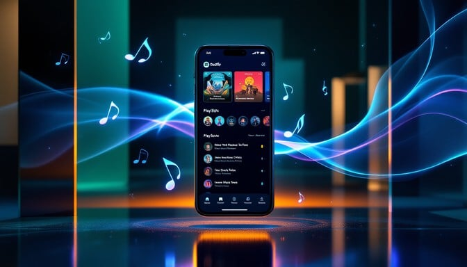

How Tech Rewired Sound
Music has always been technology's most faithful companion. Every engineering leap — from mechanical cylinders to magnetic tape, from transistor radios to fibre-optic networks — was seized by musicians and listeners hungry for the next sonic frontier.
"Without music, life would be a mistake." — Friedrich Nietzsche
The digital audio workstation democratised music production. Today, a teenager with a laptop can craft a track indistinguishable from a major-label release — and push it to 600 million streaming listeners overnight. The barrier between creator and audience has never been thinner.
A Century of Sound
Phonograph & Vinyl
Edison's 1877 invention changed everything. By the 1950s, 12-inch LPs gave listeners a full album experience with rich, warm analog fidelity that digital still struggles to replicate.
Radio & Magnetic Tape
Radio brought music into every home for free. Magnetic tape let artists edit and overdub for the first time — enabling multi-track production and the polished studio sound we still use today.
Cassette & The Walkman
Sony's 1979 Walkman was a cultural earthquake. For the first time people carried personal soundtracks everywhere they went. Mixtapes became love letters, protest anthems, and declarations of identity.
CD & Digital Audio
The Compact Disc brought crystal-clear digital audio to the masses. CD sales peaked in the late 1990s — then Napster arrived and shattered the industry's business model in a single summer.
MP3 & iTunes Era
MP3 compression made music files small enough to share online. Apple's iPod and iTunes Store ($0.99 per song) rebuilt the music economy around individual tracks rather than albums.
Spotify, Algorithms & AI Composers
Streaming eliminated ownership. Algorithms now curate your taste better than any DJ. AI tools like Suno and Udio are letting anyone generate full tracks — redefining what it means to be a musician.
Spotify monthly active listeners worldwide
Songs available on streaming platforms today
Year Edison invented the phonograph
Of US music revenue now comes from streaming
Explore Music Innovation
The Vintage Era
Mechanical sound machines, horn gramophones, and shellac cylinders — the ancestors of every speaker, studio, and streaming app that followed.
Explore →Recording Revolution
From condenser microphones and reel-to-reel tape to Pro Tools and Ableton — how we captured, layered, and sculpted sound in the studio.
Explore →
Digital Discovery
Streaming platforms and AI-driven recommendation engines fundamentally changed how we find, share, and fall in love with music every single day.
Explore →Music gives a soul to the universe, wings to the mind, flight to the imagination, and life to everything.
— PlatoThe Streaming Revolution
In 2023, streaming accounted for over 84 % of all recorded music revenue in the United States. The shift from owning music to accessing it has reshaped how artists are paid, how albums are sequenced, and how listeners relate to sound.
Algorithms know your mood before you do. Playlists like Discover Weekly have replaced the radio DJ, while AI composition tools are beginning to challenge what it means to be a musician at all.
- Personalised AI recommendations built from billions of listening signals
- Artists earn per-stream royalties — a fundamentally new revenue model
- Spatial audio and lossless formats redefine listening fidelity
- AI-generated music is now commercially indistinguishable in many genres